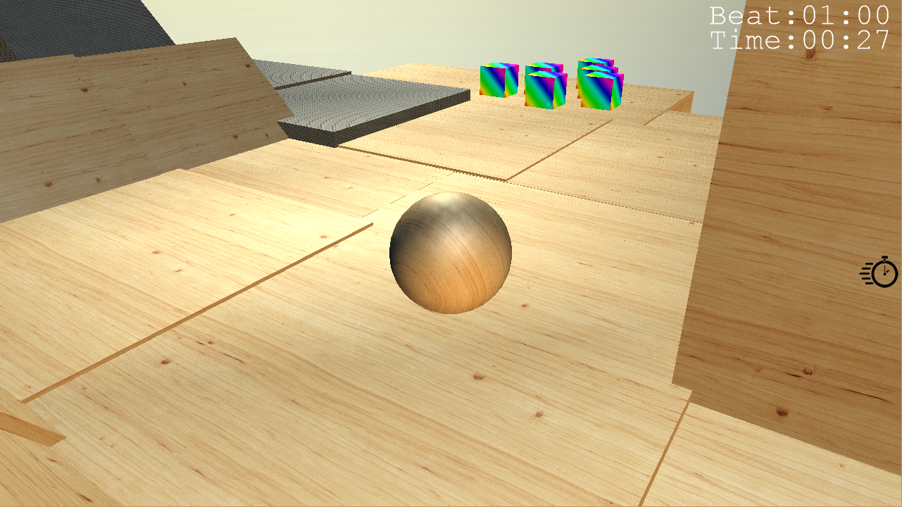
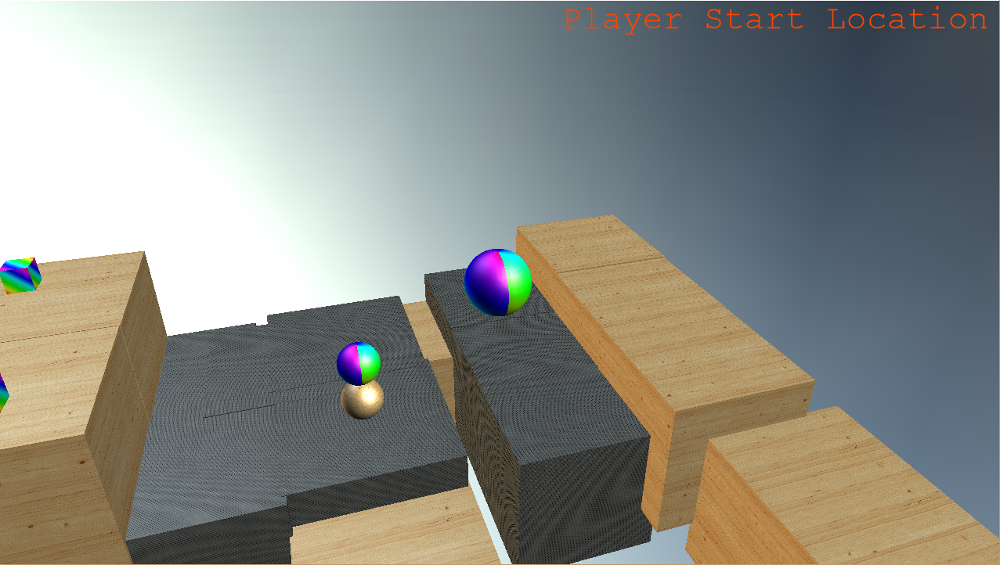

Projects
Shamballs (Team Project)
Overview
Shamballs is a 3D, competitive, third person, multiplayer game aimed ages 5+. It has three different game modes. First is time trial mode, this is where a player can attempt to race through a level to get the best possible time. Secondly is race, where players race against each other on premade levels to finish first. The levels are created in a point to point format, there is one start point and one finish point. The second game mode is derby; this is where players will try to push opponents off a premade arena to be the last man standing.
A level editor is available to create levels for each game mode. This will provide a quick and easy way of creating fun interactive levels.
To see more, view the Game Design Document & Techinical Design Document, below in the files section.
Team & Work Contributions
Sean Chambers: smchambers95@gmail.com
Took care of the characteristic features in the development of Shamballs. Features that gave the
game feel, goals and characteristics.
Contributions:
Marc Tucker: marcedforlife@gmail.com
Marc lead as the primary developer on this project. He built majority of the framework.
He was able assist the team with any issues they ran into. His motivation kept this
project moving rapidly.
Contributions:
Mathew Bielby: mathewbielby3@gmail.com
Mathew's primary role in the project was implementing multiplayer. He also provided
insightful feedback during the development.
Contributions:
Middleware
The middlewares' implemented. Click each to see website(Opens in new tab).
Screenshots
 
Reflection
Overview:
When I initially started this project, I was quite concerned with how I would perform in my team, as they grasp new concepts
quicker than I do. Choosing to build a game using different middleware (DirectX & PhysX) than before meant that we all had to learn
it, and implement it. This took up a lot of development time. However, once we had it all up and running, we were able to progress
very quickly. Throughout the development I asked for feedback on the algorithms I wrote. As my peers are more experienced in
programming, having their feedback ensured that the outcome I produced satisfied the whole team.
As I felt as though I may not be able to contribute as much as my team members could, I took it upon myself to be responsibile for the documentation. Once in development, I handled most of the visual overlay text, icons, and sounds and how these were presented (e.g. current pickup, connection status). Tackling these tasks allowed for the other team members to focus down on more advanced sections of the game. As I did not generally code the more advanced code, I did peer program with them. This was done via Skype, and in person. This peer programming proved useful as, I am able to understand the code written, and why it was written in such way.
Overall, the project was extremely exciting, fun, and challenging. We could have built another 2D game using middleware that we are familiar with, and finished it with ease. Taking the approach we did (3D game with different middleware), I have now got to learn and experience a whole new area of game development, using middleware Triple A games use.
Challenges:
Collision filtering was a task set to me. When i began this task, I understood the concept of collision filtering, and thought it
would be very simple. I tried implementing this many times, but did not understand enough to get it working, even after reading the
documentation, and sample code. I tried searching for others' examples on the web, but was not able to find any. This problem was
eventually solved, when I sat down with my team member Marc, and then ran through it together. We got it implemented. I was then able
to carry on working with my pickups logic.
This challenge was very frustrating because I felt that it was not documented well enough. However, due to having very capable team
mates, it was resolved.
Placing text, and icons on the screen was a bit of a challenge. The coordinate system is different to what I previously worked on. 0,0 was in the middle of the window. This challenged was overcome by using my brain, alongside using trial and error.
As a student, I(And my team) had to be focused on another three papers during the course of this development. Getting a solid amount of time on the project in one go was always difficult to find. However, we managed, and built a really fun game.
What I would do different next time:
If I take on a project like this again, I would need to upskill more in vector math, quaternions and matricies. I would almost double the
estimated time it's going to take to build and limit the scope to fit, to ensure that the whole project in fully completed.
To see full reflection, see Reflection in the files section.
Personal Log
Files
References
Audacityteam.org. (2016). Audacity®.
Available at: http://www.audacityteam.org/
Fmod.org. (2016). FMOD.
Available at: http://www.fmod.org/
GitHub. (2016). Microsoft/DirectXTK.
Available at: https://github.com/Microsoft/DirectXTK/
Docs.nvidia.com. (2016). NVIDIA® PhysX® SDK 3.3.4 Documentation — NVIDIA PhysX SDK 3.3.4 Documentation.
Available at:
http://docs.nvidia.com/gameworks/content/gameworkslibrary/physx/guide/Index.html
Jenkinssoftware.com. (2016). RakNet - Multiplayer game network engine.
Available at: http://www.jenkinssoftware.com/
Code Snippet
Resource Manager:
#include "pch.h"
#include "ResourceManager.h"
#include "Engine.h"
ResourceManager::ResourceManager()
{
Initialize();
}
ResourceManager::~ResourceManager()
{
//Delete all sounds from m_SoundList
std::map<SoundName::SoundName, Sound*>::iterator itr = m_SoundMap.begin();
while (itr != m_SoundMap.end()){
itr->second->release();
++itr;
}
m_SoundMap.clear();
//Delete textures
std::map<TextureName::TextureName, Microsoft::WRL::ComPtr<ID3D11ShaderResourceView>*>::iterator titr = m_TextureMap.begin();
while (titr != m_TextureMap.end()){
titr->second->Get()->Release();
++titr;
}
m_TextureMap.clear();
}
bool ResourceManager::Initialize()
{
//Load sounds, and add to sound map.
//Countdown
Sound* countdown;
Engine::GetInstance().m_SoundSystem->createSound("Assets\\Sounds\\countdown.mp3", FMOD_DEFAULT, 0, &countdown);
m_SoundMap.insert(std::pair<SoundName::SoundName, Sound*>(SoundName::COUNTDOWN, countdown));
//Menu
Sound* menuclick;
Engine::GetInstance().m_SoundSystem->createSound("Assets\\Sounds\\menuclick.wav", FMOD_DEFAULT, 0, &menuclick);
m_SoundMap.insert(std::pair<SoundName::SoundName, Sound*>(SoundName::MENUCLICK, menuclick));
Sound* menuscroll;
Engine::GetInstance().m_SoundSystem->createSound("Assets\\Sounds\\menuscroll.wav", FMOD_DEFAULT, 0, &menuscroll);
m_SoundMap.insert(std::pair<SoundName::SoundName, Sound*>(SoundName::MENUSCROLL, menuscroll));
//Player sounds
Sound* boostsound;
Engine::GetInstance().m_SoundSystem->createSound("Assets\\Sounds\\boostsound.wav", FMOD_DEFAULT, 0, &boostsound);
m_SoundMap.insert(std::pair<SoundName::SoundName, Sound*>(SoundName::BOOSTSOUND, boostsound));
Sound* growsound;
Engine::GetInstance().m_SoundSystem->createSound("Assets\\Sounds\\growsound.mp3", FMOD_DEFAULT, 0, &growsound);
m_SoundMap.insert(std::pair<SoundName::SoundName, Sound*>(SoundName::GROWSOUND, growsound));
Sound* shrinksound;
Engine::GetInstance().m_SoundSystem->createSound("Assets\\Sounds\\shrinksound.mp3", FMOD_DEFAULT, 0, &shrinksound);
m_SoundMap.insert(std::pair<SoundName::SoundName, Sound*>(SoundName::SHRINKSOUND, shrinksound));
Sound* pickupsound;
Engine::GetInstance().m_SoundSystem->createSound("Assets\\Sounds\\pickupsound.mp3", FMOD_DEFAULT, 0, &pickupsound);
m_SoundMap.insert(std::pair<SoundName::SoundName, Sound*>(SoundName::PICKUP, pickupsound));
Sound* jumpsound;
Engine::GetInstance().m_SoundSystem->createSound("Assets\\Sounds\\jumpsound.mp3", FMOD_DEFAULT, 0, &jumpsound);
m_SoundMap.insert(std::pair<SoundName::SoundName, Sound*>(SoundName::JUMP, jumpsound));
Sound* landsound;
Engine::GetInstance().m_SoundSystem->createSound("Assets\\Sounds\\landsound.wav", FMOD_DEFAULT, 0, &landsound);
m_SoundMap.insert(std::pair<SoundName::SoundName, Sound*>(SoundName::LAND, landsound));
Sound* playermovementsound;
Engine::GetInstance().m_SoundSystem->createSound("Assets\\Sounds\\playermovementsound.wav", FMOD_DEFAULT, 0, &playermovementsound);
m_SoundMap.insert(std::pair<SoundName::SoundName, Sound*>(SoundName::PLAYERMOVEMENT, playermovementsound));
//Background music
Sound* backgroundmusic;
Engine::GetInstance().m_SoundSystem->createSound("Assets\\Sounds\\backgroundmusic.mp3", FMOD_DEFAULT, 0, &backgroundmusic);
m_SoundMap.insert(std::pair<SoundName::SoundName, Sound*>(SoundName::BACKGROUND, backgroundmusic));
//Load texture, and add to sound map.
//Wood texutre
Microsoft::WRL::ComPtr<ID3D11ShaderResourceView>* woodTexture = new Microsoft::WRL::ComPtr<ID3D11ShaderResourceView>();
DX::ThrowIfFailed(CreateWICTextureFromFile(Engine::GetInstance().m_d3dDevice.Get(), L"Assets\\Textures\\woodtexture.png", nullptr, woodTexture->GetAddressOf()));
m_TextureMap.insert(std::pair<TextureName::TextureName, Microsoft::WRL::ComPtr<ID3D11ShaderResourceView>*>(TextureName::WOOD, woodTexture));
//Concrete texture
Microsoft::WRL::ComPtr<ID3D11ShaderResourceView>* concreteTexture = new Microsoft::WRL::ComPtr<ID3D11ShaderResourceView>();
DX::ThrowIfFailed(CreateWICTextureFromFile(Engine::GetInstance().m_d3dDevice.Get(), L"Assets\\Textures\\concretetexture.png", nullptr, concreteTexture->GetAddressOf()));
m_TextureMap.insert(std::pair<TextureName::TextureName, Microsoft::WRL::ComPtr<ID3D11ShaderResourceView>*>(TextureName::CONCRETE, concreteTexture));
//Steel texture
Microsoft::WRL::ComPtr<ID3D11ShaderResourceView>* steelTexture = new Microsoft::WRL::ComPtr<ID3D11ShaderResourceView>();
DX::ThrowIfFailed(CreateWICTextureFromFile(Engine::GetInstance().m_d3dDevice.Get(), L"Assets\\Textures\\steeltexture.png", nullptr, steelTexture->GetAddressOf()));
m_TextureMap.insert(std::pair<TextureName::TextureName, Microsoft::WRL::ComPtr<ID3D11ShaderResourceView>*>(TextureName::STEEL, steelTexture));
//Boost texture
Microsoft::WRL::ComPtr<ID3D11ShaderResourceView>* pickupTexture = new Microsoft::WRL::ComPtr<ID3D11ShaderResourceView>();
DX::ThrowIfFailed(CreateWICTextureFromFile(Engine::GetInstance().m_d3dDevice.Get(), L"Assets\\Textures\\pickuptexture.png", nullptr, pickupTexture->GetAddressOf()));
m_TextureMap.insert(std::pair<TextureName::TextureName, Microsoft::WRL::ComPtr<ID3D11ShaderResourceView>*>(TextureName::PICKUP, pickupTexture));
//Sky Texture
Microsoft::WRL::ComPtr<ID3D11ShaderResourceView>* skyTexture = new Microsoft::WRL::ComPtr<ID3D11ShaderResourceView>();
DX::ThrowIfFailed(CreateWICTextureFromFile(Engine::GetInstance().m_d3dDevice.Get(), L"Assets\\Textures\\skytexture.png", nullptr, skyTexture->GetAddressOf()));
m_TextureMap.insert(std::pair<TextureName::TextureName, Microsoft::WRL::ComPtr<ID3D11ShaderResourceView>*>(TextureName::SKY, skyTexture));
//Finish Texture
Microsoft::WRL::ComPtr<ID3D11ShaderResourceView>* finishTexture = new Microsoft::WRL::ComPtr<ID3D11ShaderResourceView>();
DX::ThrowIfFailed(CreateWICTextureFromFile(Engine::GetInstance().m_d3dDevice.Get(), L"Assets\\Textures\\finish.png", nullptr, finishTexture->GetAddressOf()));
m_TextureMap.insert(std::pair<TextureName::TextureName, Microsoft::WRL::ComPtr<ID3D11ShaderResourceView>*>(TextureName::FINISH, finishTexture));
//ICONS
//Cursor
Microsoft::WRL::ComPtr<ID3D11ShaderResourceView>* cursoricon = new Microsoft::WRL::ComPtr<ID3D11ShaderResourceView>();
DX::ThrowIfFailed(CreateWICTextureFromFile(Engine::GetInstance().m_d3dDevice.Get(), L"Assets\\Textures\\cursor.png", nullptr, cursoricon->ReleaseAndGetAddressOf()));
m_TextureMap.insert(std::pair<TextureName::TextureName, Microsoft::WRL::ComPtr<ID3D11ShaderResourceView>*>(TextureName::CURSOR, cursoricon));
//Boost Icon Texture
Microsoft::WRL::ComPtr<ID3D11ShaderResourceView>* boostIcon = new Microsoft::WRL::ComPtr<ID3D11ShaderResourceView>();
DX::ThrowIfFailed(CreateWICTextureFromFile(Engine::GetInstance().m_d3dDevice.Get(), L"Assets\\Textures\\boosticon64.png", nullptr, boostIcon->ReleaseAndGetAddressOf()));
m_TextureMap.insert(std::pair<TextureName::TextureName, Microsoft::WRL::ComPtr<ID3D11ShaderResourceView>*>(TextureName::BOOST, boostIcon));
//Grow Icon Texture
Microsoft::WRL::ComPtr<ID3D11ShaderResourceView>* growicon = new Microsoft::WRL::ComPtr<ID3D11ShaderResourceView>();
DX::ThrowIfFailed(CreateWICTextureFromFile(Engine::GetInstance().m_d3dDevice.Get(), L"Assets\\Textures\\growicon64.png", nullptr, growicon->ReleaseAndGetAddressOf()));
m_TextureMap.insert(std::pair<TextureName::TextureName, Microsoft::WRL::ComPtr<ID3D11ShaderResourceView>*>(TextureName::GROW, growicon));
//DERBY ICONS
//connected icon
Microsoft::WRL::ComPtr<ID3D11ShaderResourceView>* connected = new Microsoft::WRL::ComPtr<ID3D11ShaderResourceView>();
DX::ThrowIfFailed(CreateWICTextureFromFile(Engine::GetInstance().m_d3dDevice.Get(), L"Assets\\Textures\\connected.png", nullptr, connected->ReleaseAndGetAddressOf()));
m_TextureMap.insert(std::pair<TextureName::TextureName, Microsoft::WRL::ComPtr<ID3D11ShaderResourceView>*>(TextureName::CONNECTED, connected));
//not connected icon
Microsoft::WRL::ComPtr<ID3D11ShaderResourceView>* notconnected = new Microsoft::WRL::ComPtr<ID3D11ShaderResourceView>();
DX::ThrowIfFailed(CreateWICTextureFromFile(Engine::GetInstance().m_d3dDevice.Get(), L"Assets\\Textures\\notconnected.png", nullptr, notconnected->ReleaseAndGetAddressOf()));
m_TextureMap.insert(std::pair<TextureName::TextureName, Microsoft::WRL::ComPtr<ID3D11ShaderResourceView>*>(TextureName::NOTCONNECTED, notconnected));
//connect button
Microsoft::WRL::ComPtr<ID3D11ShaderResourceView>* connectbutton = new Microsoft::WRL::ComPtr<ID3D11ShaderResourceView>();
DX::ThrowIfFailed(CreateWICTextureFromFile(Engine::GetInstance().m_d3dDevice.Get(), L"Assets\\Textures\\connectbutton.png", nullptr, connectbutton->ReleaseAndGetAddressOf()));
m_TextureMap.insert(std::pair<TextureName::TextureName, Microsoft::WRL::ComPtr<ID3D11ShaderResourceView>*>(TextureName::CONNECT, connectbutton));
return true;
}